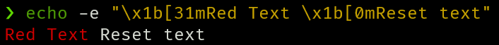

Help
What is an ANSI escape code?
ANSI escape codes are special sequences of characters used to print certain styles and colors to terminal emulators. The codes are prefixed by an escape sequence, such as \x1b. Then, the codes are listed between '[' and 'm', delimited by semicolons ';'. Each code is a number corresponding to a different style.
Example
For example, the code for red text is 31. Thus, if you were to print \x1b[31m to the terminal, any text following would be red.

Thus it is important to print the escape code for RESET (\x1b[0m) after finishing printing your stylized text, to return the style back to normal.
More information
More information can be found here.
Here is a recorded demo on reddit.